↑
↓


Every skill lands at one of three levels:
Beginner
This skill is emerging. Practice and support will help it grow.
Learner
Developing well — showing this skill in many situations.
Expert
Strong and consistent — really shining in this area.


Every report combines the views of the 3 people who matter most.
Teacher
What they observe in the classroom
The student themselves
Direct tasks, in the child's own voice

Parents
What home sees that school can't

Get a 360° view of the student.
12 foundational skills — hearts on one strand, brains on the other.
SOCIAL-EMOTIONAL
COGNITIVE
07 · Emotion Awareness
Recognising and understanding one's own emotions.
01 · Attention
Focusing on relevant information and sustaining it on a task.
08 · Emotion Regulation
Managing and responding to emotions appropriately.
02 · Working Memory
Holding and using information over short periods.
09 · Empathy
Understanding and sharing the feelings of others.
03 · Cognitive Flexibility
Shifting between tasks, perspectives, and strategies.
10 · Relationship Skills
Building and maintaining positive interactions with others.
04 · Inhibition — Distraction
Resisting distractions to stay on task.
11 · Metacognition
Reflecting on and understanding one's own thinking.
05 · Inhibition — Response
Pausing and thinking before acting.
12 · Critical Thinking
Analysing and evaluating information to form judgments.
06 · Planning & Organisation
Setting goals, planning steps, and structuring tasks.
{{ schoolCount }} schools are already with us.
12,510
children reached
4,000+
educators trained
2 → 15
sections to branches, one school, one year
95%
of teachers rate training highly effective


Every morning the children ask their teachers: are we doing a Tilli activity today?
Mr. Upali Gunasekara · Principal, Polymath International School
HundrED Global Collection 2026 · QS Reimagine Education Gold Winner · GESAwards Special Track Winner · UNICEF Venture Fund
WHAT PARTNER SCHOOLS DID
Measure. Ask. Intervene.
MEASURE
Start with a real baseline
In the first weeks, every child is assessed across all 12 skills — teacher observation, parent report, and direct tasks. Repeated three times a year, so growth is visible, not guessed.
579 data points per child, per year.

ASK
Ask-Tilli, on WhatsApp
Teachers ask about a child or a class and get lesson plans, behaviour guidance, and that child's own data — in the middle of a school day, in seconds.
How do I support Dhruv's focus during group work?
Dhruv's attention is at Learner. Try a 2-minute attention warm-up before the task — here's one from Week 14.
ASK-TILLI · WHATSAPP
INTERVENE
A curriculum, not a workshop
36 weeks of play-based lessons for every class — Feelings Time workbooks, Teacher's Guidebooks, and the SEL Teaching Kit. 30 minutes a week. No new period, no extra prep.


Measure
Ask
Intervene
Baseline → midline → endline. 12 skills, three angles, three times a year — and dashboards update the moment data lands.
Ask-Tilli answers teachers' day-to-day questions with each child's own data — lesson plans, behaviour guidance, class summaries. On WhatsApp, in seconds.
A 36-week play-based curriculum mapped to the same 12 skills you measure — 30 minutes a week, workbooks and guidebooks included.